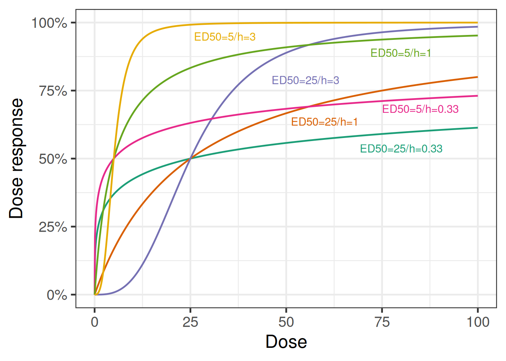
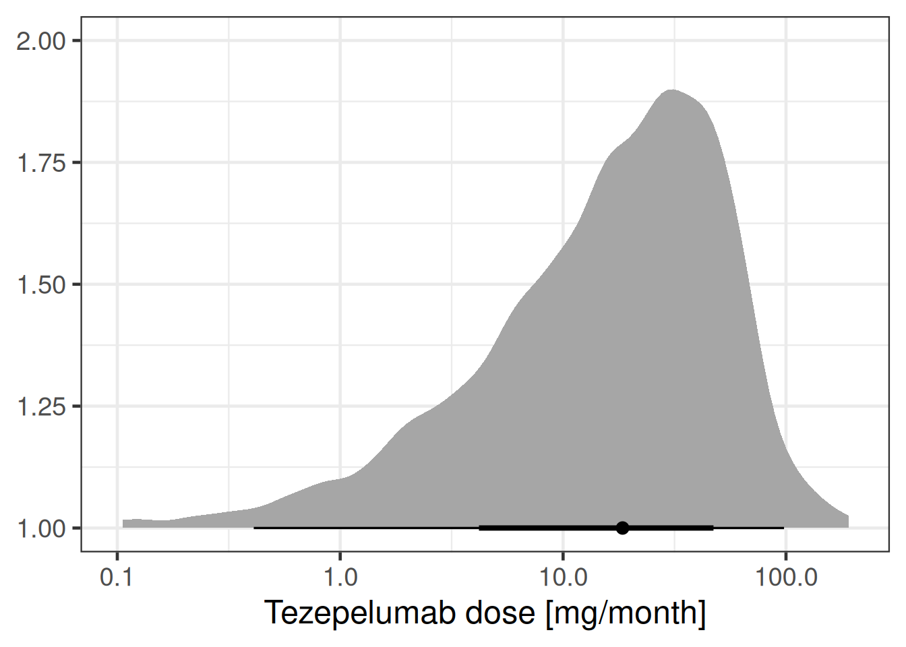
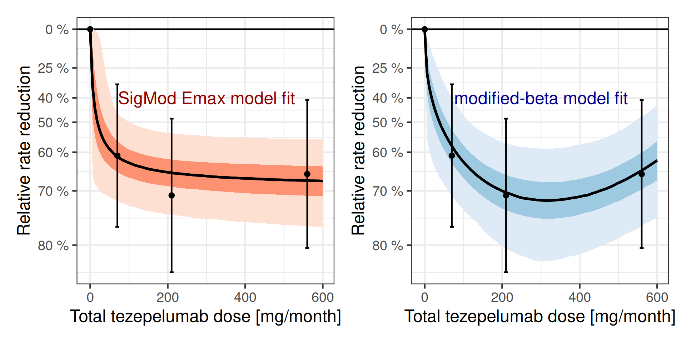
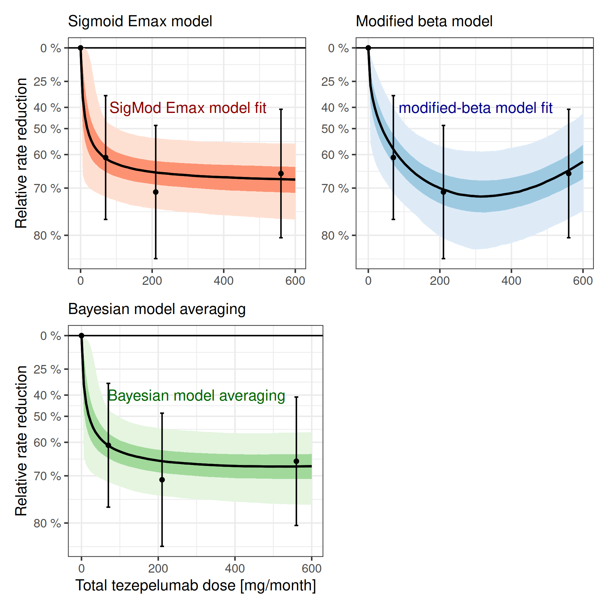

library(tidyverse)
library(brms)
library(posterior)
library(tidybayes)
library(ggrepel)
library(patchwork)
here::i_am("src/02b_dose_finding.qmd")
library(dplyr)
library(ggdist)
# instruct brms to use cmdstanr as backend and cache all Stan binaries
options(brms.backend="cmdstanr", cmdstanr_write_stan_file_dir=here::here("_brms-cache"))
# create cache directory if not yet available
dir.create(here::here("_brms-cache"), FALSE)
set.seed(8979476)9 Dose finding
This case study features specifically
- Modeling non-linear summary dose-response data
- Performing Bayesian model averaging
- Comparing prior and posterior distributions
- How priors can be composed in a modular manner
To run the R code of this section please ensure to load these libraries and options first:
9.1 Background: What role does dose response modeling play in drug development?
In clinical drug development, one key question is what dose of a drug should be used to treat a disease. Ideally, we would want a dose that achieves (nearly) optimal efficacy, while at the same time minimizing side effects to optimize the benefit-risk balance. In many therapeutic areas the relationship between dose and efficacy is characterized in Phase IIb clinical trials that randomize patients to received either one of several doses of a drug or a matching placebo.
In such studies, it would be inefficient to try a lot of doses and just look at the performance of each dose in isolation. Instead, we know that biologically there should be some smooth function that describes the relationship between dose and efficacy. We can exploit this knowledge to make the analysis of such studies more efficient. There are a number of methods for analyzing such trials that exploit that the true expected difference to placebo will follow some smooth function of the dose. However, we typically do not know what smooth function best approximates the true underlying dose response function. Obvious candidate functions include monotone functions that eventually plateau, and functions that initially achieve a maximum and then decline.
9.2 Data: PATHWAY asthma example
We will use the PATHWAY trial as an example. This was a placebo-controlled randomized trial of three different tezepelumab dosing regimens compared with placebo in severe asthma. Two of the tezepelumab dosing regimens were given every 4 weeks. We will treat the third regimen of 280 mg every 2 weeks as if it had been 560 mg every 4 weeks. The primary endpoint of PATHWAY was the annualized rate of asthma exacerbations. The plot below shows the published estimates with 95% confidence intervals per dose. Many standard dose response modeling approaches do not require access to individual patient data - which in this case is not publically available -, but can be conducted given estimates and standard error for each dose.
Show the code
# This is the PATHWAY DRF data by group
pathway <- tibble(dose = c(0, 70, 210, 280*2),
group = c("placebo", "tezepelumab 70 mg q4w",
"tezepelumab 210 mg q4w", "tezepelumab 280 mg q2w"),
est = log(c(0.67, 0.26, 0.19, 0.22)),
stderr = c(0.10304, 0.17689, 0.22217, 0.19108))
# Simple plot of the data
pathway |>
ggplot(aes(x=dose, y=est, label=str_wrap(group, 12), col=group,
ymin=est-stderr*qnorm(0.975), ymax=est+stderr*qnorm(0.975))) +
geom_errorbar(width=10) +
geom_point() +
scale_y_continuous(breaks=log(seq(0.1,1,0.1)), labels=seq(0.1,1,0.1)) +
ylab("Annualized rate (95% CI)") +
xlab("Tezepelumab dose (mg/month)") +
geom_text_repel(nudge_x=c(25, 30, 60, -30), segment.color = NA)
Or to show this as rate ratios compared with the placebo group:
Show the code
# This is the PATHWAY DRF log-rate-ratios vs. placebo
pathway_deltas <- tibble(dose= c(0, 70, 210, 280*2),
group = c("reference level",
"tezepelumab 70 mg q4w vs. placebo",
"tezepelumab 210 mg q4w vs. placebo",
"tezepelumab 280 mg q2w vs. placebo"),
logRR= c(0,log(c(1-0.61, 1-0.71, 1-0.66))),
.lower90 = log(c(NA_real_, 1-0.75, 1-0.82, 1-0.79)), # Paper reports 90% CIs
.upper90 = log(c(NA_real_, 1-0.39, 1-0.53, 1-0.47)),
stderr = (.upper90-.lower90)/2/qnorm(0.95),
.lower = logRR-stderr*qnorm(0.975), # Get 95% CIs
.upper = logRR+stderr*qnorm(0.975))
# Plot log-rate ratios
pathway_deltas |>
ggplot(aes(x=dose, y=logRR,
label=str_wrap(group, 12), col=group,
ymin=.lower, ymax=.upper)) +
geom_hline(yintercept=0) +
geom_errorbar(width=10) +
geom_point() +
scale_y_continuous(breaks=log(seq(0.1,1,0.1)), labels=seq(0.1,1,0.1)) +
scale_x_continuous(limits=c(0,600)) +
ylab("Exacerbation rate ratio (95% CI)") +
xlab("Tezepelumab dose (mg/month)") +
geom_text_repel(nudge_x=c(25, 30, 60, -30), nudge_y=c(-0.15, 0, 0, 0),
segment.color = NA)
9.3 Model description
To conduct dose response analyses under model uncertainty a number of approaches such as the Multiple Comparison Procedures and Modeling (MCP-Mod) (Bretz, Dette, and Pinheiro 2010), the generalized MCP-Mod approach (Pinheiro et al. 2014) and Gaussian process based approaches are popular. Within the generalized MCP-Mod framework model averaging is an attractive approach (Bornkamp 2015) for dealing with model uncertainty that has performed well in simulation studies (Schorning et al. 2016). Here, we take a Bayesian approach to model averaging in the MCP-Mod framework, which is called BMA-Mod (BMA stands for Bayesian model averaging) (Gould 2019).
While more complex mechanistic pharmacokinetic/pharmacodynamic (PK/PD) models are often important, here, we discuss directly modelling the relationship between dose and some clinical outcome in patients.
BMA-Mod, just as MCP-Mod, uses a set of candidate models that might describe dose response relationships. In the subsections that follow, we describe each model.
9.3.1 The likelihood function into which we put the dose response model
No matter whether we use summary data consiting of estimates with standard errors with each treatment group, or whether we have individual patient data (IPD) for a continuous, binary, count, time-to-event or ordinal outcome, our regression model will be one of the dose response models we will describe in the subsequent sections.
What will differ is the likelihood function, into which we insert the dose response function. In the PATHWAY example, we will use that the estimates for log-mean-event-rate for each dose level \(i=1,\ldots,I\) are approximately indpendent with \(\hat{\theta}_i \sim N(\theta_i, \text{SE}(\hat{\theta}_i))\) distributions. Thus, we can use a Gaussian likelihood with known standard deviation. In case of IPD, we would instead use suitable IPD-likelihoods. This only requires minimal changes in the code for the examples.
9.3.2 The sigmoid-Emax and the Emax model
A very popular dose response model is the sigmoid-Emax model. This model assumes that the outcome for each dose group can be described by a function of the form \[f(\text{dose}; \text{parameters}) = \text{E}_0 + \text{E}_\text{max} \times \frac{\text{dose}^h}{\text{dose}^h + \text{ED}_{50}^h}.\] This is a monotone curve that starts at no difference to placebo at dose 0 (the expected placebo response is \(\text{E}_0\)) and plateaus at a maximum effect of size \(\text{E}_\text{max} \in (-\infty, \infty)\). 50% of the maximum effect is reached at the dose \(\text{ED}_{50} \in (0, \infty)\). The steepness of the curve is determined by the so-called Hill parameter \(h \in (0, \infty)\). For \(h=1\), we have the simple Emax model, for \(h>1\) the dose response curve is steeper around \(\text{ED}_{50}\) (and plateaus faster) than for a simple Emax model, while for \(h<1\) the curve is less steep. Typical values of \(h\) are smaller than 5 and usually at most 3, so assigning a prior that puts most of the prior weight for \(\log h\) between \(-\log 5\) and \(\log 5\) makes sense.

The Emax model is a simple model with some biological plausibility. It is the equation that results from assuming the drug concentrations at the site of drug action are proportional to the administered dose, that drug binds to and unbinds from a receptor at a rate proportional to the drug concentration, and that drugs effects are proportional to receptor occupancy. And, it assumes that all these relationships are exactly the same for all patients. All of these assumptions can be relaxed/avoided when individual patient data (and even better, if also the necessary data for PK/PD modeling) are available.
9.3.3 The modified beta model
Another possible dose response model is the modified beta model. \[f(\text{dose}; \text{parameters}) = \text{E}_0 + \text{E}_{\text{max }2} \times \frac{(\delta_1 + \delta_2)^{\delta_1 + \delta_2}}{\delta_1^{\delta_1} + \delta_2^{\delta_2}} \times (\frac{\text{dose}}{S})^{\delta_1} \times (1-\frac{\text{dose}}{S})^{\delta_2}\] This model is capable of describing a non-monotone dose response.
9.3.4 Exponential model, and linear and quadratic functions of dose or log-dose
The exponential model \[f(\text{dose}; \text{parameters}) = b_1 + b_2 (\exp(b_3 \times \text{dose})-1)\] with \(b_3<0\) was also discussed by (Gould 2019).
(Gould 2019) also considered linear and quadratic functions of dose or log-dose. I.e. \[f(\text{dose}; \text{parameters}) = \text{E}_0 + \beta \times \text{dose},\] \[f(\text{dose}; \text{parameters}) = \text{E}_0 + \beta \times \log (\text{dose}),\] \[f(\text{dose}; \text{parameters}) = \text{E}_0 + \beta_1 \times \text{dose} + \beta_2 \times \text{dose}^2\] or \[f(\text{dose}; \text{parameters}) = \text{E}_0 + \beta_1 \times \log (\text{dose}) + \beta_2 \times (\log (\text{dose}))^2.\] These models are perhaps better suited towards modeling the dose-response relationship within the range of tested dose and would not necessarily be expected to extrapolate well beyond the data range. Nevertheless, they may be useful for providing a more flexible set of models.
9.3.5 Bayesian Model averaging
If we have multiple models that are similarly plausible given our prior information and the data we observed, then picking a single model out of these ignores the model uncertainty. For this reason, model averaging is known to be a good approach for dealing with model uncertainty. It assigns greater weight to more plausible models and can - given enough evidence - give all weight to a single clearly best model (and also give near-zero weight to clearly inappropriate models). So, - given enough data - it effectively results in model selection, but as long as we only have limited information multiple models will contribute to our inference.
(Gould 2019) proposes to use a weighted combination of the predictions for each dose level from each of the candidate models and suggests to base the posterior model weigths on predictive likelihood weights (Ando and Tsay 2010).
9.4 Implementation and results
We will now fit the various dose response models introduced in the statistical model section using brms. We will start with the sigmoid-Emax model and look at the things brms let us do easily with a single fitted model. We will not repeat that level of exploration for other models, but you may wish to do so in practice.
9.4.1 Sigmoid-Emax model with brms
We use the capabilities of brms for fitting non-linear models. For example, a sigmoid-Emax model can be fitted as follows:
# Fitting a sigmoid Emax model
model_sigmoid <- bf(est | se(stderr) ~ E0 + sEmax * dose^h/(dose^h + ED50^h),
nlf(h ~ exp(logh)), nlf(ED50 ~ exp(logED50)),
E0 ~ 1, logED50 ~ 1, logh ~ 1, sEmax ~ 1,
nl=TRUE, family=gaussian())
prior_sigmoid <-
prior(normal(0, 1), nlpar=E0) +
prior(normal(0, 1), nlpar=logh) +
prior(normal(0, 1), nlpar=sEmax) +
prior(normal(4, 2), nlpar=logED50)
fit_sigmoid <- brm(model_sigmoid,
data=pathway,
prior = prior_sigmoid,
control=list(adapt_delta=0.9),
seed=3624,
refresh=0)Note that with individual patient data, we would not write est | se(stderr) ~, but would instead use outcome ~ and bf() + negbinomial() (and similarly, e.g. + gaussian() for continuous data). With the settings above, you might still experience a divergent transition or two and you may wish to increase adapt_delta to 0.95 or 0.99, or alternatively try to come up with a way to reparameterize the model.
# Summarize model fit
summary(fit_sigmoid) Family: gaussian
Links: mu = identity
Formula: est | se(stderr) ~ E0 + sEmax * dose^h/(dose^h + ED50^h)
h ~ exp(logh)
ED50 ~ exp(logED50)
E0 ~ 1
logED50 ~ 1
logh ~ 1
sEmax ~ 1
Data: pathway (Number of observations: 4)
Draws: 4 chains, each with iter = 2000; warmup = 1000; thin = 1;
total post-warmup draws = 4000
Regression Coefficients:
Estimate Est.Error l-95% CI u-95% CI Rhat Bulk_ESS Tail_ESS
E0_Intercept -0.42 0.10 -0.61 -0.22 1.00 2148 2448
logED50_Intercept 2.69 1.35 -0.34 5.12 1.00 1557 1400
logh_Intercept -0.04 0.99 -1.89 1.98 1.00 1256 1539
sEmax_Intercept -1.29 0.32 -2.08 -0.84 1.00 1233 1284
Further Distributional Parameters:
Estimate Est.Error l-95% CI u-95% CI Rhat Bulk_ESS Tail_ESS
sigma 0.00 0.00 0.00 0.00 NA NA NA
Draws were sampled using sample(hmc). For each parameter, Bulk_ESS
and Tail_ESS are effective sample size measures, and Rhat is the potential
scale reduction factor on split chains (at convergence, Rhat = 1).So what does the model fit look like? We have two options for looking at this. The easiest and fastest uses the conditional_effects function from brms.
plot(conditional_effects(fit_sigmoid, "dose"),
points = TRUE)Ignoring unknown labels:
• fill : "NA"
• colour : "NA"
Ignoring unknown labels:
• fill : "NA"
• colour : "NA"The downside is that in a controlled trial we are primarily interested in the contrast with placebo and that we would like to see the confidence intervals around the point estimates for each dose. We can obtain that with a little bit more code:
Show the code
plot_dose_response <- function(model, newdata) {
# We are going to predict the annualized rate for all doses from 0,1,2,...600.
# We are setting stderr=0 to avoid predicting with sampling variability.
if(missing(newdata)) {
newdata <- tibble(dose = seq(0L, 600L, length.out = 101), stderr = 0)
}
pred_newdata <- newdata |>
tidybayes::add_predicted_rvars(model) |>
mutate(logRR = .prediction - .prediction[dose == 0]) |>
select(-.prediction)
pred_newdata |>
ggplot(aes(x = dose, ydist = logRR)) +
geom_hline(yintercept = 0) +
stat_lineribbon(.width = c(0.5, 0.95)) +
geom_point(
data = pathway_deltas,
aes(x = dose, y = logRR),
inherit.aes = FALSE
) +
geom_errorbar(
data = pathway_deltas,
aes(x = dose, y = logRR, ymin = .lower, ymax = .upper),
width = 10,
inherit.aes = FALSE
) +
scale_y_continuous(
breaks = log(c(0.2, 0.3, 0.4, 0.5, 0.6, 0.75, 1)),
labels = paste(100 * (1 - c(0.2, 0.3, 0.4, 0.5, 0.6, 0.75, 1)), "%")
) +
ylab("Relative rate reduction") +
xlab("Total tezepelumab dose [mg/month]")
}
dr_sigmoid <- plot_dose_response(fit_sigmoid) +
scale_fill_brewer(palette = "Reds") +
annotate("text", x = 300, y = log(0.6), label = "SigMod Emax model fit", color = "darkred")
plot(dr_sigmoid)
We can also plot the dose response curve for each MCMC sample:
dr_sigmoid$data |>
unnest_rvars() |>
sample_draws(500) |>
ggplot(aes(x = dose, y = logRR, group = factor(.draw))) +
geom_hline(yintercept = 0) +
geom_line(col = "darkred", alpha = 0.25, size = 0.25) +
geom_point(data = pathway_deltas |> mutate(.draw = NA_integer_)) +
geom_errorbar(
data = pathway_deltas |> mutate(.draw = NA_integer_),
aes(ymin = .lower, ymax = .upper),
width = 10
) +
scale_y_continuous(
breaks = log(c(0.2, 0.3, 0.4, 0.5, 0.6, 0.75, 1)),
labels = paste(100 * (1 - c(0.2, 0.3, 0.4, 0.5, 0.6, 0.75, 1)), "%")
) +
ylab("Relative rate reduction") +
xlab("Total tezepelumab dose [mg/month]")
By rearranging the sigmoid-Emax model equation, we can directly compute the implied posterior for the dose leading to a 50% relative rate reduction (provided that Emax is sufficiently large). For the calculation we use from the R package posterior its rvars functionality, which simplifies these calulations.
Show the code
# extract posterior as rvars collection of draws
post_sigmoid_rvs <- as_draws_rvars(fit_sigmoid)
# target effect we look for
logRR_target <- log(0.5)
# determine draws for which Emax is sufficiently large for the effect
# we are looking for
large_Emax_rv <- with(post_sigmoid_rvs, b_sEmax_Intercept < logRR_target)
# distribution of doses having the target effect (if possible),
# (Emax/logRR_target - 1)^(-1/h) * ED50
# in log space this is
# -1/h * log(Emax/logRR_target - 1) + log(ED50)
log_dose_min_rv <- with(
post_sigmoid_rvs,
rvar_ifelse(
large_Emax_rv,
-1 *
exp(-1 * b_logh_Intercept) *
log(b_sEmax_Intercept / logRR_target - 1) +
b_logED50_Intercept,
Inf
)
)
# restrict the posterior draws to cases whenever we can actually reach
# the desired effect
log_dose_min_rv <- subset_draws(
log_dose_min_rv,
draw = which(draws_of(large_Emax_rv))
)
tibble(dose_min = exp(log_dose_min_rv)) |>
ggplot(aes(y = 1, dist = dose_min)) +
ggdist::stat_halfeye() +
scale_x_log10(limits = c(0.1, 200)) +
xlab("Tezepelumab dose [mg/month]") +
ylab(NULL)
As the plot below shows the data resulted in a substantially different posterior distribution compared with the prior distribution for the logED50 parameter and the Emax parameter. These parameters are reasonably well-identified even with just 3 doses - although the ED50 would be better estimated, if doses with approximately 50% of the Emax (maximum relative rate reduction) had been included in the study. In contrast, the log-Hill-parameter is poorly identified, when there are very few doses (as in this study), which is why the posterior distribution is more or less the prior distribution for the logED50 parameter.
Show the code
compare_prior_posterior <- function(param, fit) {
prior <- fit$prior |>
parse_dist(prior) |>
rename(.variable = nlpar) |>
filter(.variable == param, source == "user")
model_param <- paste("b", param, "Intercept", sep = "_")
post <- tibble(post = as_draws_rvars(fit)[[model_param]])
ggplot(post, aes(y = 1, xdist = post)) +
stat_slabinterval() +
stat_slab(
data = prior,
aes(xdist = .dist_obj),
fill = NA,
colour = "darkblue"
) +
scale_thickness_shared() +
ylab(NULL) +
xlab(param) +
theme(
axis.ticks.y = element_blank(), # removes y-axis ticks
axis.text.y = element_blank(), # removes y-axis text
axis.title.y = element_blank() # removes y-axis title
)
}
cmp_sigmoid <- lapply(prior_sigmoid$nlpar, compare_prior_posterior, fit_sigmoid)
# turns the list of plots into a call of plot1 + plot2 + ... which
# merges the different plots into a single one
Reduce("+", cmp_sigmoid)
9.4.2 Modified beta model with brms
We now fit the modified beta model that can capture non-monotone dose response relationships.
# Try a modified beta model
model_beta <- bf(
est | se(stderr) ~
E0 +
bEmax *
(delta1 + delta2)^(delta1 + delta2) /
(delta1^delta1 * delta2^delta2) *
(dose / 850)^delta1 *
(1 - dose / 850)^delta2,
E0 ~ 1,
delta1 ~ 1,
delta2 ~ 1,
bEmax ~ 1,
nl = TRUE,
family = gaussian()
)
prior_beta <-
prior(normal(0, 1), nlpar = E0) +
prior(normal(0, 1), nlpar = bEmax) +
prior(lognormal(0, 1), nlpar = delta1, lb = 0) +
prior(lognormal(0, 1), nlpar = delta2, lb = 0)
fit_beta <- brm(model_beta,
data = pathway,
prior = prior_beta,
control = list(adapt_delta = 0.9),
seed = 7304,
refresh = 0
)Let us summarize the model fit:
summary(fit_beta) Family: gaussian
Links: mu = identity
Formula: est | se(stderr) ~ E0 + bEmax * (delta1 + delta2)^(delta1 + delta2)/(delta1^delta1 * delta2^delta2) * (dose/850)^delta1 * (1 - dose/850)^delta2
E0 ~ 1
delta1 ~ 1
delta2 ~ 1
bEmax ~ 1
Data: pathway (Number of observations: 4)
Draws: 4 chains, each with iter = 2000; warmup = 1000; thin = 1;
total post-warmup draws = 4000
Regression Coefficients:
Estimate Est.Error l-95% CI u-95% CI Rhat Bulk_ESS Tail_ESS
E0_Intercept -0.42 0.10 -0.62 -0.22 1.00 1914 2200
delta1_Intercept 0.45 0.21 0.13 0.96 1.00 1485 1915
delta2_Intercept 0.75 0.40 0.16 1.69 1.00 1518 1756
bEmax_Intercept -1.30 0.21 -1.74 -0.91 1.00 1602 1963
Further Distributional Parameters:
Estimate Est.Error l-95% CI u-95% CI Rhat Bulk_ESS Tail_ESS
sigma 0.00 0.00 0.00 0.00 NA NA NA
Draws were sampled using sample(hmc). For each parameter, Bulk_ESS
and Tail_ESS are effective sample size measures, and Rhat is the potential
scale reduction factor on split chains (at convergence, Rhat = 1).So what does the model fit look like? We could, again, just use plot(conditional_effects(fit_beta, "dose"), points = TRUE) or get a slightly more tailored plot.
Show the code
dr_beta <- plot_dose_response(fit_beta) +
scale_fill_brewer(palette = "Blues") +
annotate(
"text",
x = 300,
y = log(0.6),
label = "modified-beta model fit",
color = "darkblue"
)
plot(dr_beta)
Let’s also consider how informative the data is wrt to each parameter’s prior:
cmp_beta <- lapply(prior_beta$nlpar, compare_prior_posterior, fit_beta)
Reduce("+", cmp_beta)9.4.3 Perform Bayesian model averaging
Now we have two fitted model. We can see both of them together below:
dr_sigmoid + dr_beta
In practice, we do not really know, whether one of these is the true data generating model. In fact, realistically both models are going to be at least somewhat misspecified, because we made no attempt to fully model the full complexity of the underlying biological system. So, really, the question is which of the two models provides the better approximation. At a glance both seem to fit the data somewhat decently, so it seems unlikely that we can completely rule one of the two models out. That is where Bayesian model averaging comes in.
First, we need to compare how well each model fits. As it turns out, when you just have 4 data points (due to us using summary data), it is problematic to just use the “standard” brms::loo function to perform approximate leave-one-out cross-validation (LOO-CV) based on the posterior likelihood as implemented in the loo package, as can be seen by running
loo(fit_sigmoid)Warning: Found 1 observations with a pareto_k > 0.7 in model 'fit_sigmoid'. We recommend to set 'moment_match = TRUE'
in order to perform moment matching for problematic observations.
Computed from 4000 by 4 log-likelihood matrix.
Estimate SE
elpd_loo 0.8 0.3
p_loo 1.5 0.7
looic -1.7 0.7
------
MCSE of elpd_loo is NA.
MCSE and ESS estimates assume MCMC draws (r_eff in [0.4, 1.1]).
Pareto k diagnostic values:
Count Pct. Min. ESS
(-Inf, 0.7] (good) 3 75.0% 862
(0.7, 1] (bad) 0 0.0% <NA>
(1, Inf) (very bad) 1 25.0% <NA>
See help('pareto-k-diagnostic') for details.and
loo(fit_beta)Warning: Found 3 observations with a pareto_k > 0.7 in model 'fit_beta'. We recommend to set 'moment_match = TRUE' in
order to perform moment matching for problematic observations.
Computed from 4000 by 4 log-likelihood matrix.
Estimate SE
elpd_loo -0.1 0.3
p_loo 2.3 0.8
looic 0.1 0.6
------
MCSE of elpd_loo is NA.
MCSE and ESS estimates assume MCMC draws (r_eff in [0.5, 0.7]).
Pareto k diagnostic values:
Count Pct. Min. ESS
(-Inf, 0.7] (good) 1 25.0% 943
(0.7, 1] (bad) 2 50.0% <NA>
(1, Inf) (very bad) 1 25.0% <NA>
See help('pareto-k-diagnostic') for details.Instead, we actually fit each model leaving each dose group out. We could probably do something more sophisticated by simulating consistent individual patient data (and then performing approximate LOO-CV) or parametric sampling from the normal distribution around the point estimates.
loo_exact_fit_sigmoid <- kfold(fit_sigmoid, folds = "loo")
loo_exact_fit_beta <- kfold(fit_beta, folds = "loo")Now, we can compare the models via
loo_compare(loo_exact_fit_sigmoid, loo_exact_fit_beta) elpd_diff se_diff
fit_sigmoid 0.0 0.0
fit_beta -1.7 0.9 9.4.3.1 Approach 1 (manual without brms)
Let us say that we a-priori assign a 75% probability to the SigEmax model and 25% to the modified beta model.
# follows:
# Gould, A. L. (2019). BMA‐Mod: A Bayesian model averaging strategy
# for determining dose‐response relationships in the presence of model
# uncertainty. Biometrical Journal, 61(5), 1141-1159.
# https://dx.doi.org/10.1002/bimj.201700211
prior_weights <- c(0.75, 0.25)
posterior_weigths <- c(
prior_weights[1] * exp(loo_exact_fit_sigmoid$estimates["elpd_kfold", "Estimate"]),
prior_weights[2] * exp(loo_exact_fit_beta$estimates["elpd_kfold", "Estimate"])
)
(posterior_weigths <- posterior_weigths / sum(posterior_weigths))[1] 0.94522422 0.05477578As we can see, using leaving-one-dose-group out cross-validation, suggests that the SigEmax model should be given most of the weight. A-posteriori, we assign 94.5% weight to the SigEmax model and 5.5% weight to the modified beta model. However, if we had done approximate LOO-CV with individual patient data, the modified beta model might have been given more weight.
When we average the predictions of the two models with these weights, we get the dose response curve below.
Show the code
bma_curve <- dr_sigmoid$data |>
inner_join(dr_beta$data, by = "dose") |>
mutate(
logRR = posterior_weigths[1] * logRR.x + posterior_weigths[2] * logRR.y
) |>
dplyr::select(-logRR.x, -logRR.y)
dr_bma <- plot_dose_response(fit_sigmoid) %+%
bma_curve +
scale_fill_brewer(palette = "Greens") +
annotate(
"text",
x = 300,
y = log(0.6),
label = "Bayesian model averaging",
color = "darkgreen"
)Warning: <ggplot> %+% x was deprecated in ggplot2 4.0.0.
ℹ Please use <ggplot> + x instead.Show the code
plot(
((dr_sigmoid +
theme(axis.title.x = element_blank()) +
labs(subtitle = "Sigmoid Emax model")) |
(dr_beta +
theme(axis.title.y = element_blank(), axis.title.x = element_blank()) +
labs(subtitle = "Modified beta model"))) /
(dr_bma + labs(subtitle = "Bayesian model averaging") | plot_spacer())
)
9.4.3.2 Approach 2: Using brms functions
Before, we needed to do a lot of manual work to get model-averaged predictions, but the below using brms::pp_average would be a lot simpler, if we could rely on the approximate LOO-CV.
9.4.3.2.1 Approach 2a: Not appropriate here
dr_curve_data <- tibble(dose = seq(0L, 600L, length.out = 101), stderr = 0)
bma_brms_curve <- dr_curve_data |>
mutate(
epred_bma = rvar(pp_average(
fit_sigmoid,
fit_beta,
method = "posterior_epred",
newdata = dr_curve_data,
# Not a good option in this case
weights = "loo",
summary = FALSE
)),
# Forming differences to placebo by merging with the placebo
# (dose=0) predictions for each sample
logRR = epred_bma - epred_bma[dose == 0]
)9.4.3.2.2 Approach 2b: Using leave-one-dose-out CV
Because we want to avoid using approximate LOO-CV in this case, we first replace the internally calculated approximate LOO-CV results with our own
fit_sigmoid$criteria$loo <- loo_exact_fit_sigmoid
fit_beta$criteria$loo <- loo_exact_fit_beta
(w_dose <- model_weights(fit_sigmoid, fit_beta, weights = "loo"))fit_sigmoid fit_beta
0.8518975 0.1481025 We can then do the following:
bma_curve_pred <- dr_curve_data |>
tidybayes::add_epred_rvars(fit_sigmoid, value=".epred1") |>
tidybayes::add_epred_rvars(fit_beta, value=".epred2") |>
mutate(epred_bma = .epred1 * w_dose[1] + .epred2 * w_dose[2],
logRR = epred_bma - epred_bma[dose == 0])
dr_bma2 <- plot_dose_response(fit_sigmoid) %+% bma_curve_pred +
scale_fill_brewer(palette = "Greens") +
annotate("text", x = 300, y = log(0.6), label = "BMA (LOO weights)", color = "darkgreen")
plot(dr_bma2)9.4.3.3 Why did we do this form of Bayesian model averaging?
Why are we doing it like this? Can we not just fit a single model like this (as an example where we average a sigmoid-Emax and a modified beta model)?
\[ \begin{aligned} f(\text{dose}; \text{parameters}) = & \text{E}_0 + w \times \text{E}_{\text{maxSigmoid}} \times \frac{\text{dose}^h}{\text{dose}^h + \text{ED}_{50}^h} \\ & + (1-w) \times \text{E}_{\text{maxBeta}} \times \frac{(\delta_1 + \delta_2)^{\delta_1 + \delta_2}}{\delta_1^{\delta_1} + \delta_2^{\delta_2}} \times (\frac{\text{dose}}{S})^{\delta_1} \times (1-\frac{\text{dose}}{S})^{\delta_2} \end{aligned} \]
brms certainly lets us specify such a model (see below). Nonethelessm such a model is harder to fit as we fit jointly both models simultaneousy. Fitting each model separatley is from a numerical perspective more stable and robust in comparison to fitting each model individually. Still, note that in the above formulation the \(\text{E}_0\) parameter is shared between the models such that the above model differs from a fit of each model individually.
An important step in the model below is to align the parameter domain with the priors. That is, we continue using the apprioate transformed parameters which are positive and we restrict the weighting parameter to the domain 0 to 1 (we could also fit this parameter on the logit scale). It is important to pass these parameter range limits to Stan using the lower bound (lb) and upper bound (ub) information to Stan via the respective arguments of the prior function call declaring the parameter prior:
model_avg <- bf(
est | se(stderr) ~
E0 +
mwgtSigmoid * sEmax * dose^h / (dose^h + ED50^h) +
(1-mwgtSigmoid) *
bEmax *
(delta1 + delta2)^(delta1 + delta2) /
(delta1^delta1 * delta2^delta2) *
(dose / 850)^delta1 *
(1 - dose / 850)^delta2,
nlf(h ~ exp(logh)), nlf(ED50 ~ exp(logED50)),
E0 ~ 1,
sEmax ~ 1,
logED50 ~ 1,
logh ~ 1,
bEmax ~ 1,
delta1 ~ 1,
delta2 ~ 1,
mwgtSigmoid ~ 1,
nl = TRUE
)
prior_avg <-
prior_sigmoid +
# note that we have to drop the E0 prior from the modified beta
# prior, which can be easily done as prior specifications from brms
# are essentially data frames.
filter(prior_beta, nlpar != "E0") +
prior(beta(1, 1), nlpar = mwgtSigmoid, lb=0, ub=1)
fit_mod_avg <- brm(
model_avg,
data = pathway,
prior = prior_avg,
refresh = 0,
seed = 456456,
control = list(adapt_delta = 0.9)
)make[2]: warning: jobserver unavailable: using -j1. Add '+' to parent make rule.Start samplingRunning MCMC with 4 sequential chains...
Chain 1 finished in 0.8 seconds.
Chain 2 finished in 1.1 seconds.
Chain 3 finished in 1.0 seconds.
Chain 4 finished in 0.8 seconds.
All 4 chains finished successfully.
Mean chain execution time: 0.9 seconds.
Total execution time: 4.0 seconds.Considering the summary of the model:
summary(fit_mod_avg) Family: gaussian
Links: mu = identity
Formula: est | se(stderr) ~ E0 + mwgtSigmoid * sEmax * dose^h/(dose^h + ED50^h) + (1 - mwgtSigmoid) * bEmax * (delta1 + delta2)^(delta1 + delta2)/(delta1^delta1 * delta2^delta2) * (dose/850)^delta1 * (1 - dose/850)^delta2
h ~ exp(logh)
ED50 ~ exp(logED50)
E0 ~ 1
sEmax ~ 1
logED50 ~ 1
logh ~ 1
bEmax ~ 1
delta1 ~ 1
delta2 ~ 1
mwgtSigmoid ~ 1
Data: pathway (Number of observations: 4)
Draws: 4 chains, each with iter = 2000; warmup = 1000; thin = 1;
total post-warmup draws = 4000
Regression Coefficients:
Estimate Est.Error l-95% CI u-95% CI Rhat Bulk_ESS Tail_ESS
E0_Intercept -0.43 0.10 -0.63 -0.22 1.00 3615 2592
sEmax_Intercept -1.27 0.77 -2.50 0.75 1.01 930 1033
logED50_Intercept 2.91 1.62 -0.29 6.40 1.00 1763 1386
logh_Intercept 0.06 0.95 -1.80 1.94 1.00 3339 2274
bEmax_Intercept -0.61 0.97 -2.19 1.49 1.00 1218 2672
delta1_Intercept 1.30 1.91 0.13 6.35 1.00 1636 2615
delta2_Intercept 1.46 2.25 0.14 6.32 1.00 2624 2109
mwgtSigmoid_Intercept 0.64 0.28 0.05 0.99 1.01 795 1154
Further Distributional Parameters:
Estimate Est.Error l-95% CI u-95% CI Rhat Bulk_ESS Tail_ESS
sigma 0.00 0.00 0.00 0.00 NA NA NA
Draws were sampled using sample(hmc). For each parameter, Bulk_ESS
and Tail_ESS are effective sample size measures, and Rhat is the potential
scale reduction factor on split chains (at convergence, Rhat = 1).Now, let’s compare all four different models graphically:
dr_mod_avg <- plot_dose_response(fit_mod_avg) +
scale_fill_brewer(palette = "Reds") +
annotate(
"text",
x = 300,
y = log(0.6),
label = "Average model",
color = "darkred"
)
plot(
((dr_sigmoid +
theme(axis.title.x = element_blank()) +
labs(subtitle = "Sigmoid Emax model")) |
(dr_beta +
theme(axis.title.y = element_blank(), axis.title.x = element_blank()) +
labs(subtitle = "Modified beta model"))) /
(dr_bma +
labs(subtitle = "Bayesian model averaging") |
dr_mod_avg +
theme(axis.title.y = element_blank()) +
labs(subtitle = "Average model"))
)9.4.4 Going beyond the default MCP-Mod models
So far, a lot of what we did could also be done in a frequentist manner using the MCP-Mod approach. However, with brms it is easy to make our models more complex when necessary. For example, we assumed that a 280 mg q2w dose is equivalent to a 560 mg q4w dose. This is of course only the case in terms of the total amount of drug injected over the trial period. However, the two dose regimens differ in terms of their blood concentrations over time as shown in the plot below.
Show the code
sim_1st_order_pk <- function(
injected = c(1, rep(0, 28 * 5)),
dose = 1,
thalf = 28 * 24,
V = 10
) {
k = log(2) / thalf
concentration = rep(0, length(injected))
for (i in 1:length(injected)) {
if (i > 1) {
concentration[i] <- concentration[i - 1] -
k * concentration[i - 1] +
dose * injected[i] / V
} else {
concentration[i] <- dose * injected[i] / V
}
}
return(concentration)
}
# fmt: skip
plot_data <- tribble(~regimen, ~dose, ~schedule,
"q4wk", 280, rep(c(1, rep(0, 28 * 24 - 1)), 12),
"q2w", 280, rep(c(1, rep(0, 14 * 24 - 1)), 24),
"q4wk", 560, rep(c(1, rep(0, 28 * 24 - 1)), 12)
) |>
rowwise() |>
mutate(concentration = list(sim_1st_order_pk(schedule, dose = dose))) |>
ungroup() |>
unnest_longer(concentration) |>
mutate(
hour = 1:n(),
dose_regimen = paste0(dose, " mg ", regimen),
.by = c(regimen, dose)
)
plot_data |>
ggplot(aes(x = hour, y = concentration, col = dose_regimen)) +
geom_line() +
coord_cartesian(ylim = c(0, 120)) +
scale_x_continuous(breaks = seq(0, 12) * 28 * 24, labels = seq(0, 12)) +
annotate(
"text",
x = c(500, 5000, 8025),
y = c(90, 20, 90),
label = c("560 mg q4wk", "280 mg q4wk", "280 mg q2wk"),
angle = c(0, 0, -75)
) +
xlab("Time in trial (months)") +
ylab("Drug concentration [mg/L]")
These differences in pharmacokinetic profiles likely lead to at least somewhat different efficacy outcomes. For example, if efficacy is more driven by the peak concentration achieved in each dosing interval, 280 mg q2w might be less effective than a 560 mg q4w regiment would have been. On the other hand, if efficacy is more determined by the minimum concentration maintained throughout time, then 280 mg q2w could be more effective than 560 mg q4w. If the main determinant of efficacy is the average drug concentration over time, and peaks and troughs do not matter (at least within the concentrations seen), then the two dosing regimens might be exactly identical.
So, we could update our previous sigmoid Emax model and add an extra term that describes how the 280 mg q2w dose might relate to q4w doses. Note that assuming a monotone concentration response, a 280 mg q2w regimen cannot be worse than a 280 mg q4w regimen - this is also illustrated by the plot showing that the concentrations of 280 mg q2w are (unsurprisingly) always above those of 280 mg q4w. This gives us a lower bound for the efficacy of 280 mg q2w. Similarly, its peak concentrations stay below 2.5 times the peak concentrations of 280 mg q2w, which gives us an upper bound. We will specify a log-normal prior with mean 0 and SD 0.67 for a regimen factor that indicates what q4w dose a q2w dose is equivalent to.
model_sigmoid_alt <- bf(
est | se(stderr) ~
E0 + sEmax * (dose * dosefactor)^h / ((dose * dosefactor)^h + ED50^h),
nlf(h ~ exp(logh)),
nlf(ED50 ~ exp(logED50)),
nlf(dosefactor ~ exp((dose == 560) * regimen)),
E0 ~ 1,
logED50 ~ 1,
logh ~ 1,
sEmax ~ 1,
regimen ~ 1,
nl = TRUE,
family = gaussian()
)
prior_sigmoid_alt <-
prior_sigmoid +
prior(normal(0, 0.67), nlpar = regimen)
fit_sigmoid_alt <- brm(
model_sigmoid_alt,
data = pathway,
prior = prior_sigmoid_alt,
control = list(adapt_delta = 0.9),
seed = 5768768,
refresh = 0
)Let’s summarize the model results:
summary(fit_sigmoid_alt)Warning: There were 2 divergent transitions after warmup. Increasing adapt_delta above 0.9 may help. See
http://mc-stan.org/misc/warnings.html#divergent-transitions-after-warmup Family: gaussian
Links: mu = identity
Formula: est | se(stderr) ~ E0 + sEmax * (dose * dosefactor)^h/((dose * dosefactor)^h + ED50^h)
h ~ exp(logh)
ED50 ~ exp(logED50)
dosefactor ~ exp((dose == 560) * regimen)
E0 ~ 1
logED50 ~ 1
logh ~ 1
sEmax ~ 1
regimen ~ 1
Data: pathway (Number of observations: 4)
Draws: 4 chains, each with iter = 2000; warmup = 1000; thin = 1;
total post-warmup draws = 4000
Regression Coefficients:
Estimate Est.Error l-95% CI u-95% CI Rhat Bulk_ESS Tail_ESS
E0_Intercept -0.41 0.10 -0.60 -0.22 1.00 2704 2567
logED50_Intercept 2.70 1.37 -0.33 5.22 1.00 1603 1343
logh_Intercept -0.04 0.96 -1.88 1.85 1.00 1651 2055
sEmax_Intercept -1.30 0.33 -2.12 -0.84 1.00 1328 1185
regimen_Intercept -0.06 0.68 -1.40 1.33 1.00 3206 2391
Further Distributional Parameters:
Estimate Est.Error l-95% CI u-95% CI Rhat Bulk_ESS Tail_ESS
sigma 0.00 0.00 0.00 0.00 NA NA NA
Draws were sampled using sample(hmc). For each parameter, Bulk_ESS
and Tail_ESS are effective sample size measures, and Rhat is the potential
scale reduction factor on split chains (at convergence, Rhat = 1).As we can see, we can fit such a model, but the marginal posterior for the log-regimen factor is still a N(0, 0.67) distribution. Thus, the data do not inform this parameter very well - which should not surprise us. However, if we had information external to the PATHWAY trial, such as the elicited judgments of experts, we could incorporate it via this type of model.
9.5 Conclusion
As we could see brms makes it surprisingly easy to fit non-linear dose response models and to perform model averaging. Taking a Bayesian approach to dose response modeling is attractive for a number of reasons: * using prior information e.g. on expected placebo outcomes, the maximum plausible treatment effect and typical dose response patterns, * (weakly-)informative priors avoid issues with maximum likelihood estimation such as infinitely steep sigmoid Emax models (common when the lowest tested dose has the best point estimate), * the convenience of obtaining predictions about things that are transformations of the model parameters (e.g. the dose with at least a certain effect), and * the straightforward way, in which we can extend the basic models to account for the specifics of our dose finding study.
9.6 Excercises
9.6.1 Exercise 1: Peanut allergy
In a hypothetical phase 2b trial children and adolescents with peanut allergy were randomly assigned to placebo or 5 doses (5 to 300 mg) of a new drug. After 26 weeks the patients underwent a double-blind placebo-controlled food challenge and the primary endpoint was the proportion of patients that could ingest 600 mg or more of peanut protein without experiencing dose-limiting symptoms. The plots below show an overview of the data. Note that no placebo patients were considered “responders” per the primary endpoint definition.
Show the code
peanut <- tibble(
TRT01P = structure(c(
6L, 6L, 6L, 6L, 6L, 6L, 6L, 6L, 6L, 6L, 6L, 6L, 6L, 6L, 6L, 6L, 6L, 6L, 6L, 6L, 6L, 6L, 6L, 6L, 6L, 6L, 6L, 6L,
6L, 6L, 6L, 6L, 6L, 6L, 6L, 6L, 6L, 6L, 6L, 6L, 6L, 6L, 6L, 6L, 6L, 6L, 6L, 6L, 6L, 6L, 5L, 5L, 5L, 5L, 5L, 5L,
5L, 5L, 5L, 5L, 5L, 5L, 5L, 5L, 5L, 5L, 5L, 5L, 5L, 5L, 5L, 5L, 5L, 5L, 5L, 5L, 5L, 5L, 5L, 5L, 5L, 5L, 5L, 5L,
5L, 5L, 5L, 5L, 5L, 5L, 5L, 5L, 5L, 5L, 5L, 5L, 5L, 5L, 5L, 5L, 4L, 4L, 4L, 4L, 4L, 4L, 4L, 4L, 4L, 4L, 4L, 4L,
4L, 4L, 4L, 4L, 4L, 4L, 4L, 4L, 4L, 4L, 4L, 4L, 4L, 4L, 4L, 4L, 4L, 4L, 4L, 4L, 4L, 4L, 4L, 4L, 4L, 4L, 4L, 4L,
4L, 4L, 4L, 4L, 4L, 4L, 4L, 4L, 4L, 4L, 3L, 3L, 3L, 3L, 3L, 3L, 3L, 3L, 3L, 3L, 3L, 3L, 3L, 3L, 3L, 3L, 3L, 3L,
3L, 3L, 3L, 3L, 3L, 3L, 3L, 3L, 3L, 3L, 3L, 3L, 3L, 3L, 3L, 3L, 3L, 3L, 3L, 3L, 3L, 3L, 3L, 3L, 3L, 3L, 3L, 3L,
3L, 3L, 3L, 3L, 2L, 2L, 2L, 2L, 2L, 2L, 2L, 2L, 2L, 2L, 2L, 2L, 2L, 2L, 2L, 2L, 2L, 2L, 2L, 2L, 2L, 2L, 2L, 2L,
2L, 2L, 2L, 2L, 2L, 2L, 2L, 2L, 2L, 2L, 2L, 2L, 2L, 2L, 2L, 2L, 2L, 2L, 2L, 2L, 2L, 2L, 2L, 2L, 2L, 2L, 1L, 1L,
1L, 1L, 1L, 1L, 1L, 1L, 1L, 1L, 1L, 1L, 1L, 1L, 1L, 1L, 1L, 1L, 1L, 1L, 1L, 1L, 1L, 1L, 1L, 1L, 1L, 1L, 1L, 1L,
1L, 1L, 1L, 1L, 1L, 1L, 1L, 1L, 1L, 1L, 1L, 1L, 1L, 1L, 1L, 1L, 1L, 1L, 1L, 1L
),levels = c("PBO", "5 mg", "15 mg", "50 mg", "150 mg", "300 mg"), class = "factor"),
dose = c(
300L, 300L, 300L, 300L, 300L, 300L, 300L, 300L, 300L, 300L, 300L, 300L, 300L, 300L, 300L, 300L, 300L, 300L, 300L,
300L, 300L, 300L, 300L, 300L, 300L, 300L, 300L, 300L, 300L, 300L, 300L, 300L, 300L, 300L, 300L, 300L, 300L, 300L,
300L, 300L, 300L, 300L, 300L, 300L, 300L, 300L, 300L, 300L, 300L, 300L, 150L, 150L, 150L, 150L, 150L, 150L, 150L,
150L, 150L, 150L, 150L, 150L, 150L, 150L, 150L, 150L, 150L, 150L, 150L, 150L, 150L, 150L, 150L, 150L, 150L, 150L,
150L, 150L, 150L, 150L, 150L, 150L, 150L, 150L, 150L, 150L, 150L, 150L, 150L, 150L, 150L, 150L, 150L, 150L, 150L,
150L, 150L, 150L, 150L, 150L, 50L, 50L, 50L, 50L, 50L, 50L, 50L, 50L, 50L, 50L, 50L, 50L, 50L, 50L, 50L, 50L, 50L,
50L, 50L, 50L, 50L, 50L, 50L, 50L, 50L, 50L, 50L, 50L, 50L, 50L, 50L, 50L, 50L, 50L, 50L, 50L, 50L, 50L, 50L, 50L,
50L, 50L, 50L, 50L, 50L, 50L, 50L, 50L, 50L, 50L, 15L, 15L, 15L, 15L, 15L, 15L, 15L, 15L, 15L, 15L, 15L, 15L, 15L,
15L, 15L, 15L, 15L, 15L, 15L, 15L, 15L, 15L, 15L, 15L, 15L, 15L, 15L, 15L, 15L, 15L, 15L, 15L, 15L, 15L, 15L, 15L,
15L, 15L, 15L, 15L, 15L, 15L, 15L, 15L, 15L, 15L, 15L, 15L, 15L, 15L, 5L, 5L, 5L, 5L, 5L, 5L, 5L, 5L, 5L, 5L, 5L,
5L, 5L, 5L, 5L, 5L, 5L, 5L, 5L, 5L, 5L, 5L, 5L, 5L, 5L, 5L, 5L, 5L, 5L, 5L, 5L, 5L, 5L, 5L, 5L, 5L, 5L, 5L, 5L, 5L,
5L, 5L, 5L, 5L, 5L, 5L, 5L, 5L, 5L, 5L, 0L, 0L, 0L, 0L, 0L, 0L, 0L, 0L, 0L, 0L, 0L, 0L, 0L, 0L, 0L, 0L, 0L, 0L, 0L,
0L, 0L, 0L, 0L, 0L, 0L, 0L, 0L, 0L, 0L, 0L, 0L, 0L, 0L, 0L, 0L, 0L, 0L, 0L, 0L, 0L, 0L, 0L, 0L, 0L, 0L, 0L, 0L, 0L,
0L, 0L),
AVAL = c(
1000L, 100L, 0L, 600L, 600L, 300L, 300L, 10L, 10L, 100L, 1000L, 300L, 10L, 1000L, 1000L, 1000L, 3L, 3L, 600L, 300L,
1000L, 1000L, 100L, 1000L, 600L, 600L, 1000L, 1000L, 1000L, 300L, 600L, 1000L, 1000L, 1000L, 1000L, 1000L, 300L,
1000L, 600L, 1000L, 300L, 1000L, 600L, 600L, 1000L, 1000L, 600L, 1000L, 1000L, 1000L, 1000L, 600L, 1000L, 1000L,
1000L, 0L, 600L, 300L, 1000L, 1000L, 1000L, 100L, 1000L, 1000L, 600L, 1000L, 1000L, 1000L, 600L, 300L, 600L, 600L,
100L, 600L, 1000L, 300L, 10L, 3L, 1000L, 300L, 300L, 1000L, 300L, 300L, 10L, 1000L, 1000L, 10L, 10L, 600L, 3L, 10L,
600L, 600L, 600L, 1000L, 100L, 1000L, 1000L, 10L, 1000L, 3L, 10L, 1000L, 100L, 1000L, 100L, 10L, 300L, 10L, 100L,
1000L, 0L, 1000L, 100L, 3L, 10L, 100L, 100L, 300L, 1000L, 1000L, 1000L, 10L, 1000L, 3L, 3L, 600L, 600L, 10L, 3L,
600L, 600L, 300L, 300L, 1000L, 3L, 3L, 1000L, 10L, 1000L, 1000L, 600L, 100L, 300L, 600L, 10L, 100L, 0L, 100L, 3L,
0L, 10L, 3L, 600L, 300L, 300L, 300L, 600L, 300L, 100L, 3L, 0L, 10L, 600L, 300L, 10L, 300L, 600L, 1000L, 600L, 600L,
0L, 0L, 600L, 600L, 600L, 0L, 0L, 300L, 100L, 0L, 10L, 300L, 1000L, 300L, 600L, 600L, 300L, 10L, 600L, 100L, 100L,
300L, 3L, 3L, 300L, 1000L, 10L, 3L, 100L, 3L, 100L, 100L, 300L, 3L, 3L, 600L, 300L, 3L, 3L, 3L, 300L, 3L, 0L, 10L,
3L, 300L, 10L, 10L, 600L, 0L, 300L, 600L, 0L, 0L, 100L, 100L, 10L, 100L, 10L, 100L, 600L, 0L, 600L, 0L, 10L, 100L,
0L, 0L, 0L, 0L, 3L, 10L, 3L, 300L, 600L, 0L, 0L, 300L, 10L, 10L, 100L, 300L, 0L, 0L, 0L, 3L, 0L, 0L, 10L, 0L, 300L,
3L, 0L, 0L, 0L, 0L, 100L, 3L, 0L, 3L, 10L, 10L, 3L, 0L, 3L, 10L, 3L, 0L, 0L, 3L, 100L, 0L, 0L, 300L, 0L, 0L, 0L,
0L, 0L, 0L, 0L, 3L, 0L, 3L, 0L, 0L, 0L, 0L),
PARAM = structure(
c(
1L, 1L, 1L, 1L, 1L, 1L, 1L, 1L, 1L, 1L, 1L, 1L, 1L, 1L, 1L, 1L, 1L, 1L, 1L, 1L, 1L, 1L, 1L, 1L, 1L, 1L, 1L, 1L,
1L, 1L, 1L, 1L, 1L, 1L, 1L, 1L, 1L, 1L, 1L, 1L, 1L, 1L, 1L, 1L, 1L, 1L, 1L, 1L, 1L, 1L, 1L, 1L, 1L, 1L, 1L, 1L,
1L, 1L, 1L, 1L, 1L, 1L, 1L, 1L, 1L, 1L, 1L, 1L, 1L, 1L, 1L, 1L, 1L, 1L, 1L, 1L, 1L, 1L, 1L, 1L, 1L, 1L, 1L, 1L,
1L, 1L, 1L, 1L, 1L, 1L, 1L, 1L, 1L, 1L, 1L, 1L, 1L, 1L, 1L, 1L, 1L, 1L, 1L, 1L, 1L, 1L, 1L, 1L, 1L, 1L, 1L, 1L,
1L, 1L, 1L, 1L, 1L, 1L, 1L, 1L, 1L, 1L, 1L, 1L, 1L, 1L, 1L, 1L, 1L, 1L, 1L, 1L, 1L, 1L, 1L, 1L, 1L, 1L, 1L, 1L,
1L, 1L, 1L, 1L, 1L, 1L, 1L, 1L, 1L, 1L, 1L, 1L, 1L, 1L, 1L, 1L, 1L, 1L, 1L, 1L, 1L, 1L, 1L, 1L, 1L, 1L, 1L, 1L,
1L, 1L, 1L, 1L, 1L, 1L, 1L, 1L, 1L, 1L, 1L, 1L, 1L, 1L, 1L, 1L, 1L, 1L, 1L, 1L, 1L, 1L, 1L, 1L, 1L, 1L, 1L, 1L,
1L, 1L, 1L, 1L, 1L, 1L, 1L, 1L, 1L, 1L, 1L, 1L, 1L, 1L, 1L, 1L, 1L, 1L, 1L, 1L, 1L, 1L, 1L, 1L, 1L, 1L, 1L, 1L,
1L, 1L, 1L, 1L, 1L, 1L, 1L, 1L, 1L, 1L, 1L, 1L, 1L, 1L, 1L, 1L, 1L, 1L, 1L, 1L, 1L, 1L, 1L, 1L, 1L, 1L, 1L, 1L,
1L, 1L, 1L, 1L, 1L, 1L, 1L, 1L, 1L, 1L, 1L, 1L, 1L, 1L, 1L, 1L, 1L, 1L, 1L, 1L, 1L, 1L, 1L, 1L, 1L, 1L, 1L, 1L,
1L, 1L, 1L, 1L, 1L, 1L, 1L, 1L, 1L, 1L, 1L, 1L, 1L, 1L, 1L, 1L, 1L, 1L, 1L, 1L),
levels = "Tolerated amount of peanut protein (mg)", class = "factor"),
USUBJID = c(
129L, 103L, 104L, 185L, 34L, 15L, 140L, 151L, 7L, 144L, 200L, 23L, 138L, 115L, 255L, 147L, 224L, 101L, 156L, 284L,
136L, 248L, 179L, 298L, 168L, 295L, 289L, 241L, 36L, 27L, 123L, 266L, 11L, 291L, 236L, 130L, 173L, 195L, 203L, 160L,
274L, 167L, 290L, 94L, 9L, 269L, 122L, 135L, 64L, 26L, 95L, 10L, 5L, 234L, 161L, 299L, 88L, 69L, 35L, 233L, 286L,
85L, 91L, 189L, 80L, 152L, 223L, 287L, 244L, 57L, 108L, 18L, 62L, 157L, 300L, 283L, 164L, 243L, 89L, 220L, 24L, 271L,
166L, 118L, 201L, 127L, 121L, 41L, 267L, 213L, 49L, 73L, 202L, 134L, 112L, 25L, 227L, 29L, 251L, 273L, 119L, 132L,
74L, 270L, 83L, 37L, 181L, 258L, 253L, 48L, 120L, 54L, 277L, 176L, 65L, 264L, 107L, 171L, 262L, 162L, 187L, 272L,
288L, 294L, 245L, 109L, 172L, 204L, 275L, 22L, 66L, 186L, 247L, 17L, 149L, 141L, 177L, 280L, 216L, 40L, 75L, 263L,
246L, 14L, 81L, 260L, 153L, 45L, 237L, 8L, 117L, 86L, 296L, 146L, 154L, 116L, 38L, 100L, 191L, 175L, 92L, 158L, 192L,
180L, 256L, 254L, 125L, 222L, 145L, 261L, 155L, 159L, 3L, 206L, 278L, 19L, 31L, 63L, 208L, 55L, 259L, 218L, 111L,
226L, 33L, 2L, 44L, 297L, 53L, 87L, 16L, 28L, 90L, 207L, 56L, 137L, 128L, 178L, 142L, 143L, 148L, 193L, 229L, 265L,
97L, 252L, 205L, 150L, 165L, 188L, 52L, 99L, 93L, 1L, 221L, 124L, 210L, 6L, 232L, 21L, 211L, 163L, 96L, 60L, 183L,
190L, 242L, 42L, 46L, 67L, 126L, 209L, 72L, 194L, 238L, 184L, 39L, 105L, 249L, 61L, 113L, 30L, 77L, 12L, 4L, 51L,
139L, 20L, 268L, 215L, 292L, 217L, 199L, 32L, 276L, 47L, 225L, 230L, 79L, 71L, 98L, 50L, 13L, 76L, 231L, 250L, 58L,
68L, 239L, 198L, 293L, 212L, 110L, 59L, 182L, 133L, 170L, 43L, 282L, 281L, 131L, 114L, 196L, 214L, 285L, 70L, 102L,
279L, 106L, 197L, 257L, 228L, 84L, 235L, 78L, 169L, 240L, 219L, 174L, 82L),
CRIT1 = structure(c(
1L, 1L, 1L, 1L, 1L, 1L, 1L, 1L, 1L, 1L, 1L, 1L, 1L, 1L, 1L, 1L, 1L, 1L, 1L, 1L, 1L, 1L, 1L, 1L, 1L, 1L, 1L, 1L,
1L, 1L, 1L, 1L, 1L, 1L, 1L, 1L, 1L, 1L, 1L, 1L, 1L, 1L, 1L, 1L, 1L, 1L, 1L, 1L, 1L, 1L, 1L, 1L, 1L, 1L, 1L, 1L,
1L, 1L, 1L, 1L, 1L, 1L, 1L, 1L, 1L, 1L, 1L, 1L, 1L, 1L, 1L, 1L, 1L, 1L, 1L, 1L, 1L, 1L, 1L, 1L, 1L, 1L, 1L, 1L,
1L, 1L, 1L, 1L, 1L, 1L, 1L, 1L, 1L, 1L, 1L, 1L, 1L, 1L, 1L, 1L, 1L, 1L, 1L, 1L, 1L, 1L, 1L, 1L, 1L, 1L, 1L, 1L,
1L, 1L, 1L, 1L, 1L, 1L, 1L, 1L, 1L, 1L, 1L, 1L, 1L, 1L, 1L, 1L, 1L, 1L, 1L, 1L, 1L, 1L, 1L, 1L, 1L, 1L, 1L, 1L,
1L, 1L, 1L, 1L, 1L, 1L, 1L, 1L, 1L, 1L, 1L, 1L, 1L, 1L, 1L, 1L, 1L, 1L, 1L, 1L, 1L, 1L, 1L, 1L, 1L, 1L, 1L, 1L,
1L, 1L, 1L, 1L, 1L, 1L, 1L, 1L, 1L, 1L, 1L, 1L, 1L, 1L, 1L, 1L, 1L, 1L, 1L, 1L, 1L, 1L, 1L, 1L, 1L, 1L, 1L, 1L,
1L, 1L, 1L, 1L, 1L, 1L, 1L, 1L, 1L, 1L, 1L, 1L, 1L, 1L, 1L, 1L, 1L, 1L, 1L, 1L, 1L, 1L, 1L, 1L, 1L, 1L, 1L, 1L,
1L, 1L, 1L, 1L, 1L, 1L, 1L, 1L, 1L, 1L, 1L, 1L, 1L, 1L, 1L, 1L, 1L, 1L, 1L, 1L, 1L, 1L, 1L, 1L, 1L, 1L, 1L, 1L,
1L, 1L, 1L, 1L, 1L, 1L, 1L, 1L, 1L, 1L, 1L, 1L, 1L, 1L, 1L, 1L, 1L, 1L, 1L, 1L, 1L, 1L, 1L, 1L, 1L, 1L, 1L, 1L,
1L, 1L, 1L, 1L, 1L, 1L, 1L, 1L, 1L, 1L, 1L, 1L, 1L, 1L, 1L, 1L, 1L, 1L, 1L, 1L),
levels = "Tolerating >=600 mg of peanut protein without dose-limiting symptoms", class = "factor"),
CRIT1FL = structure(c(
2L, 1L, 1L, 2L, 2L, 1L, 1L, 1L, 1L, 1L, 2L, 1L, 1L, 2L, 2L, 2L, 1L, 1L, 2L, 1L, 2L, 2L, 1L, 2L, 2L, 2L, 2L, 2L,
2L, 1L, 2L, 2L, 2L, 2L, 2L, 2L, 1L, 2L, 2L, 2L, 1L, 2L, 2L, 2L, 2L, 2L, 2L, 2L, 2L, 2L, 2L, 2L, 2L, 2L, 2L, 1L,
2L, 1L, 2L, 2L, 2L, 1L, 2L, 2L, 2L, 2L, 2L, 2L, 2L, 1L, 2L, 2L, 1L, 2L, 2L, 1L, 1L, 1L, 2L, 1L, 1L, 2L, 1L, 1L,
1L, 2L, 2L, 1L, 1L, 2L, 1L, 1L, 2L, 2L, 2L, 2L, 1L, 2L, 2L, 1L, 2L, 1L, 1L, 2L, 1L, 2L, 1L, 1L, 1L, 1L, 1L, 2L,
1L, 2L, 1L, 1L, 1L, 1L, 1L, 1L, 2L, 2L, 2L, 1L, 2L, 1L, 1L, 2L, 2L, 1L, 1L, 2L, 2L, 1L, 1L, 2L, 1L, 1L, 2L, 1L,
2L, 2L, 2L, 1L, 1L, 2L, 1L, 1L, 1L, 1L, 1L, 1L, 1L, 1L, 2L, 1L, 1L, 1L, 2L, 1L, 1L, 1L, 1L, 1L, 2L, 1L, 1L, 1L,
2L, 2L, 2L, 2L, 1L, 1L, 2L, 2L, 2L, 1L, 1L, 1L, 1L, 1L, 1L, 1L, 2L, 1L, 2L, 2L, 1L, 1L, 2L, 1L, 1L, 1L, 1L, 1L,
1L, 2L, 1L, 1L, 1L, 1L, 1L, 1L, 1L, 1L, 1L, 2L, 1L, 1L, 1L, 1L, 1L, 1L, 1L, 1L, 1L, 1L, 1L, 1L, 2L, 1L, 1L, 2L,
1L, 1L, 1L, 1L, 1L, 1L, 1L, 1L, 2L, 1L, 2L, 1L, 1L, 1L, 1L, 1L, 1L, 1L, 1L, 1L, 1L, 1L, 2L, 1L, 1L, 1L, 1L, 1L,
1L, 1L, 1L, 1L, 1L, 1L, 1L, 1L, 1L, 1L, 1L, 1L, 1L, 1L, 1L, 1L, 1L, 1L, 1L, 1L, 1L, 1L, 1L, 1L, 1L, 1L, 1L, 1L,
1L, 1L, 1L, 1L, 1L, 1L, 1L, 1L, 1L, 1L, 1L, 1L, 1L, 1L, 1L, 1L, 1L, 1L, 1L, 1L),
levels = c("N", "Y"), class = "factor"),
CRIT2 = structure(c(
1L, 1L, 1L, 1L, 1L, 1L, 1L, 1L, 1L, 1L, 1L, 1L, 1L, 1L, 1L, 1L, 1L, 1L, 1L, 1L, 1L, 1L, 1L, 1L, 1L, 1L, 1L, 1L,
1L, 1L, 1L, 1L, 1L, 1L, 1L, 1L, 1L, 1L, 1L, 1L, 1L, 1L, 1L, 1L, 1L, 1L, 1L, 1L, 1L, 1L, 1L, 1L, 1L, 1L, 1L, 1L,
1L, 1L, 1L, 1L, 1L, 1L, 1L, 1L, 1L, 1L, 1L, 1L, 1L, 1L, 1L, 1L, 1L, 1L, 1L, 1L, 1L, 1L, 1L, 1L, 1L, 1L, 1L, 1L,
1L, 1L, 1L, 1L, 1L, 1L, 1L, 1L, 1L, 1L, 1L, 1L, 1L, 1L, 1L, 1L, 1L, 1L, 1L, 1L, 1L, 1L, 1L, 1L, 1L, 1L, 1L, 1L,
1L, 1L, 1L, 1L, 1L, 1L, 1L, 1L, 1L, 1L, 1L, 1L, 1L, 1L, 1L, 1L, 1L, 1L, 1L, 1L, 1L, 1L, 1L, 1L, 1L, 1L, 1L, 1L,
1L, 1L, 1L, 1L, 1L, 1L, 1L, 1L, 1L, 1L, 1L, 1L, 1L, 1L, 1L, 1L, 1L, 1L, 1L, 1L, 1L, 1L, 1L, 1L, 1L, 1L, 1L, 1L,
1L, 1L, 1L, 1L, 1L, 1L, 1L, 1L, 1L, 1L, 1L, 1L, 1L, 1L, 1L, 1L, 1L, 1L, 1L, 1L, 1L, 1L, 1L, 1L, 1L, 1L, 1L, 1L,
1L, 1L, 1L, 1L, 1L, 1L, 1L, 1L, 1L, 1L, 1L, 1L, 1L, 1L, 1L, 1L, 1L, 1L, 1L, 1L, 1L, 1L, 1L, 1L, 1L, 1L, 1L, 1L,
1L, 1L, 1L, 1L, 1L, 1L, 1L, 1L, 1L, 1L, 1L, 1L, 1L, 1L, 1L, 1L, 1L, 1L, 1L, 1L, 1L, 1L, 1L, 1L, 1L, 1L, 1L, 1L,
1L, 1L, 1L, 1L, 1L, 1L, 1L, 1L, 1L, 1L, 1L, 1L, 1L, 1L, 1L, 1L, 1L, 1L, 1L, 1L, 1L, 1L, 1L, 1L, 1L, 1L, 1L, 1L,
1L, 1L, 1L, 1L, 1L, 1L, 1L, 1L, 1L, 1L, 1L, 1L, 1L, 1L, 1L, 1L, 1L, 1L, 1L, 1L),
levels = "Tolerating >=1000 mg of peanut protein without dose-limiting symptoms", class = "factor"),
CRIT2FL = structure(c(
2L, 1L, 1L, 1L, 1L, 1L, 1L, 1L, 1L, 1L, 2L, 1L, 1L, 2L, 2L, 2L, 1L, 1L, 1L, 1L, 2L, 2L, 1L, 2L, 1L, 1L, 2L, 2L,
2L, 1L, 1L, 2L, 2L, 2L, 2L, 2L, 1L, 2L, 1L, 2L, 1L, 2L, 1L, 1L, 2L, 2L, 1L, 2L, 2L, 2L, 2L, 1L, 2L, 2L, 2L, 1L,
1L, 1L, 2L, 2L, 2L, 1L, 2L, 2L, 1L, 2L, 2L, 2L, 1L, 1L, 1L, 1L, 1L, 1L, 2L, 1L, 1L, 1L, 2L, 1L, 1L, 2L, 1L, 1L,
1L, 2L, 2L, 1L, 1L, 1L, 1L, 1L, 1L, 1L, 1L, 2L, 1L, 2L, 2L, 1L, 2L, 1L, 1L, 2L, 1L, 2L, 1L, 1L, 1L, 1L, 1L, 2L,
1L, 2L, 1L, 1L, 1L, 1L, 1L, 1L, 2L, 2L, 2L, 1L, 2L, 1L, 1L, 1L, 1L, 1L, 1L, 1L, 1L, 1L, 1L, 2L, 1L, 1L, 2L, 1L,
2L, 2L, 1L, 1L, 1L, 1L, 1L, 1L, 1L, 1L, 1L, 1L, 1L, 1L, 1L, 1L, 1L, 1L, 1L, 1L, 1L, 1L, 1L, 1L, 1L, 1L, 1L, 1L,
1L, 2L, 1L, 1L, 1L, 1L, 1L, 1L, 1L, 1L, 1L, 1L, 1L, 1L, 1L, 1L, 2L, 1L, 1L, 1L, 1L, 1L, 1L, 1L, 1L, 1L, 1L, 1L,
1L, 2L, 1L, 1L, 1L, 1L, 1L, 1L, 1L, 1L, 1L, 1L, 1L, 1L, 1L, 1L, 1L, 1L, 1L, 1L, 1L, 1L, 1L, 1L, 1L, 1L, 1L, 1L,
1L, 1L, 1L, 1L, 1L, 1L, 1L, 1L, 1L, 1L, 1L, 1L, 1L, 1L, 1L, 1L, 1L, 1L, 1L, 1L, 1L, 1L, 1L, 1L, 1L, 1L, 1L, 1L,
1L, 1L, 1L, 1L, 1L, 1L, 1L, 1L, 1L, 1L, 1L, 1L, 1L, 1L, 1L, 1L, 1L, 1L, 1L, 1L, 1L, 1L, 1L, 1L, 1L, 1L, 1L, 1L,
1L, 1L, 1L, 1L, 1L, 1L, 1L, 1L, 1L, 1L, 1L, 1L, 1L, 1L, 1L, 1L, 1L, 1L, 1L, 1L),
levels = c("N", "Y"), class = "factor" ) )
peanut |>
ggplot(aes(x = factor(AVAL), fill = TRT01P)) +
geom_bar(position = position_dodge(preserve = "single")) +
scale_fill_manual(
values = c(
"royalblue",
"#fb6a4a",
"#ef3b2c",
"#cb181d",
"#a50f15",
"#67000d"
)
) +
xlab("Peanut protein tolerated without dose-limiting symptoms (mg)") +
ylab("Patients") +
theme(legend.position = "right")
Show the code
peanut |>
group_by(TRT01P) |>
summarize(proportion = sum(CRIT1FL == "Y") / n()) |>
ggplot(aes(x = TRT01P, y = proportion, fill = TRT01P)) +
geom_bar(stat = "identity", position = position_dodge()) +
geom_text(
aes(label = scales::percent(proportion)),
size = 7,
vjust = c(0, rep(1.5, 5))
) +
scale_fill_manual(
values = c(
"royalblue",
"#fb6a4a",
"#ef3b2c",
"#cb181d",
"#a50f15",
"#67000d"
)
) +
scale_y_continuous(breaks = seq(0, 0.7, 0.1), labels = scales::percent) +
xlab("Tolerating >=600 mg of peanut protein without dose-limiting symptoms") +
ylab("Percentage of patients")
Fit a sigmoid Emax logistic regression model (i.e. family=binomial(link="logit")). To accelerate likelihood evaluations, first summarize data as “responders” y out of n patients per dose. We expect the true placebo proportion to be around 0.05 (-2.944 on the logit scale) with much more than 0.1 or much less than 0.02 considered unlikely. It is a-priori at least possible that there is a huge treatment effect such as 95% versus 5% responders (difference on the log-scale close to 6), but we are at least mildly skeptical. The dose response is a-priori somewhat likely to follow a Emax curve (with Hill parameter near 1), but we wish to allow for the possibility of a steeper or shallower curve. The dose with half the effect (ED50) might be near 15 mg, but have considerable uncertainty around that.
fit_sigmoid <- brm(
bf(
y | trials(n) ~ E0 + Emax * dose^h / (dose^h + ED50^h),
nlf(h ~ exp(logh)),
nlf(ED50 ~ exp(logED50)),
E0 ~ 1,
logED50 ~ 1,
logh ~ 1,
Emax ~ 1,
nl = TRUE,
family = binomial(link = logit)
),
prior =
prior(normal(-2.944, 0.38), nlpar = E0) +
prior(normal(0, 1), nlpar = logh) +
prior(normal(0, 6), nlpar = Emax) +
prior(normal(2.7, 2.5), nlpar = logED50),
data = peanut |>
group_by(TRT01P, dose) |>
summarize(y = sum(CRIT1FL == "Y"), n = n(), .groups = "drop")
)Now use tibble(dose = seq(0, 300, 1), n=1) |> tidybayes::add_epred_rvars(object=fit_sigmoid) to obtain predicted proportions for every dose from 0 to 300 mg. Then, plot the curve of predicted proportions for each of these doses using ggplot2 and ggdist (using ydist=.epred in the aesthetics and the ggdist::stat_lineribbon() geom).
Next obtain the posterior distribution for the difference in proportions for each of these dose levels compared with placebo.
Try to perform a more efficient statistical analysis by either using an ordinal outcome using family = cumulative(link = "logit", threshold = "flexible") or by treating the data about the logarithm of the amount of protein tolerated as interval censored (\(-\infty\) to <log(3), >= log(3) to <log(10) mg, …) using logAVAL | cens("interval", logAVALnext) ~ with family = gaussian(). For the latter approach you might have to set log(0) to a very low number such as -28 (approximate log(weight) of one single peanut protein molecule) and assume the upper interval end when a patient could tolerate 1000 mg to, say, log(30000) (approximately 100 peanut kernels). How would you change the prior distributions for these two models? Note, if we had a baseline amount of protein tolerated, we could treat this as a monotonic covariate e.g. using mo(BASE) or assume a particular functional form.
The data below are from a non-clinical study published by Goodner and Horsfall in 1935 (Goodner, K. and Horsfall Jr, F.L., 1935. The protective action of type I antipneumococcus serum in mice: I. The quantitative aspects of the mouse protection test. The Journal of Experimental Medicine, 62(3), pp.359-374.). Mice were given injections of different amounts from a pneumococcus culture, which at the doses given would in the absence of treatment be invariably fatal, mixed together with different doses of type I antipenumococcus horse and rabbit sera. Over several days it was recorded whether each mouse survived or died. This is an example of a dose response curve that appears to have been accepted to be truly non-monotonic in the scientific literature.
Show the code
mice <- tibble(
`Source of immune serum` = factor( c(rep(1L, 29*3), rep(2L, 32*3)),
levels=c(1L, 2L),
labels=c("rabbit", "horse")),
`Amount of serum (cc.)` = rep(0.4*0.5^c(0L:5L, 0L:6L, 0L:7L, 0L:7L,
1L:5L, 0L:8L, 0L:8L, 0L:8L),
each=3),
`Amount of culture (cc.)` = c(rep(0.4, 18), rep(0.2, 21), rep(0.1, 24),
rep(0.05, 24), rep(0.4, 15), rep(0.2, 27),
rep(0.1, 27), rep(0.05,27)),
Died = c(rep(1L, 18),
1L,rep(0L,5), 1L,1L,0L, 1L,0L,0L, 1L,1L,1L, 1L,0L,0L, 1L,1L,1L,
rep(0L, 14),1L, 0L,0L,0L, 1L,1L,0L, 1L,1L,1L,
rep(0L,24),
rep(1L, 15),
rep(1L, 8),0L, 1L,0L,0L, 1L,0L,0L, rep(1L,5),0L, 0L,rep(1L,5),
rep(1L,5), 0L,1L,rep(0L,9),rep(1L,4),0L, rep(1L,6),
rep(1L,5), rep(0L,12),1L, 0L,0L, rep(1L,7))) |>
mutate(Survived = 1L-Died)Displayed in a fashion similar to the original article, the data look as in the figure below.
An alternative display showing the proportion of mice that survived versus the amount of serum given as displayed in the figure below.
Excercises in increasing order of complexity:
Fit a sigmoid Emax model to the horse serum data of each individual mouse assuming a Bernoulli distribution after choosing reasonable weakly informative priors, but remember that 0 cc. of serum was stated to result in a death rate of near 100%. Perform model checking.
Fit a modified beta model to the horse serum data and also perform Bayesian model averaging. Does this result in a better fit?